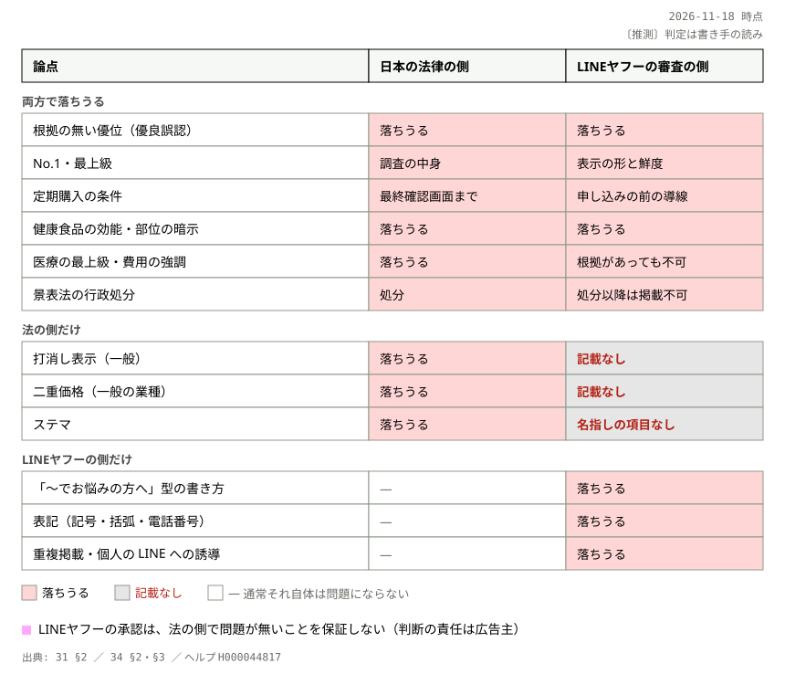

このメモについて
- 確認日: 2026-11-18（新しくウェブで取得していない。LINEヤフー側の事実は同じフォルダの
34_審査落ちの原因と直し方.md〔広告掲載基準・アカウント審査基準・入稿規定・掲載制限のヘルプ約 45 本を本文で確認したもの〕、00・06・23・61・92／rules.csv・94から引いた） - これは地図であって、法律の助言ではない。 広告運用者が「どこに決まりがあり、日本の法律と LINEヤフーの掲載基準のどちらで止まるか」を知るための見取り図。個別の表現の可否は、専門家（弁護士・薬事の専門家など）か所管の資料・窓口で確かめる。LINEヤフー自身も、基準に基づく可否の判断は広告主の責任を軽くしないと書く ✓公式本文（H:000044817、
34§1-1） - 分担: 日本の法律の中身は
../Google広告の基礎/31_日本の広告法規とポリシー.md（以下 G31）にある。ここでは繰り返さず、G31 の節番号（G31§2-5の形）で参照する。 審査の仕組み・否認の理由・直し方は34（34§2-2の形）。Meta との比べは../Meta広告の基礎/31_日本の広告法規とポリシー.md（以下 M31）。ここに書くの… - 使い方: 法規や審査が絡む質問は、§0 と §2（どちらで落ちるか）を読み、法律の中身は G31、否認の型は
34§2、表記は34§3を引く。確認日から 30 日を過ぎたら出典を取り直す（広告掲載基準は月に 1〜2 回改定される。34§9） - 凡例: ✓ 一次資料で確認 ／ △ 一次資料の中で食い違う・言い方が揺れる ／ ? 取得した一次資料に記載なし
地図
本文
0.先に結論（10 行）
- 01
LINEヤフーは日本の会社で、広告の配信先も日本（検索は Yahoo! JAPAN と国内の提携サイトの検索結果 ✓ LY-配置-001、ディスプレイの配信国は日本のみ ✓
61§4-1）。そのため掲載基準が日本の法令・行政処分・業界団体の規約を、基準の文の中で直接引いている: 景品表示法の行政処分を受けた商品は掲載不可、公正競争規約は協議会の会員でなくても遵守、医療法・医療広告ガイドラインの解説、薬機法の抵触箇所への「否認理由詳細」、日本貸金業協会の細則、財務局・金融庁の登録番号、厚生労働大臣の許可、全国求人情報協会・日本たばこ協会・日本旅行業協会・日本医学会など ✓公式本文（§1-2）。Google は「地域の法令の順守は広告主の責任」とまとめて日本の団体を一覧に載せず（G31§10-1）、Meta が日本を名指しする行は 2 つだけ（M31§0 #3）。3 媒体の中で、日本の法律の論点が媒体の審査でもそのまま落ちやすいのは LINEヤフー〔推測〕 - 02
それでも「承認された＝法的に問題ない」ではない。LINEヤフーの可否の判断は広告主の責任を軽くしない ✓（H:000044817）。行政は検索エンジンで LP を見て監視している（G31§7-1）。承認を法的な安全の根拠にしない
- 03
法律の結果を媒体が引き継ぎ、法律より長く締め出す所がある: 消費者庁から景品表示法の行政処分を受けた商品・サービスは、LINEヤフー広告の中の表示の有無に関係なく処分以降は掲載不可で、是正が確認できれば再開 ✓（H:000044853）。明らかな虚偽・誇大や重大な健康被害のおそれなど重大な違反の実績がある商品は、表現を直しても以降は掲載できない ✓。商品単位でこう締め出す規定は、Google 側は G34 に対応するものが無く（
34§0-1）、Meta 側も M31 に見当たらない ? - 04
No.1・最上級は「中身」は法、「表示の形」は LINEヤフー: 法の側は調査の 4 要件（比較対象・対象者・公平・対応。イメージ調査は注記しても不可）を見る（G31§2-5）。LINEヤフーはクリエイティブの中の省略されない箇所に第三者の出典・調査機関名・調査年、データは直近 1 年以内、対象・範囲も広告上で分かるように、を求め、「最大」「初」「唯一」「元祖」も最上級に数える ✓（H:000044774）。LP に根拠があっても広告の中に無ければ落ちる。両方を満たして初めて出せる
- 05
医療は、法と基準が同じ向きで、基準のほうが具体的: 根拠があっても最上級・No.1 は不可、クリエイティブは広告できる事項だけで「限定解除の要件を満たすことがない」、自由診療は省略されない箇所に「自由診療」と標準的な費用、割引・二重価格・モニター価格・「お手頃価格」は費用の強調で不可 ✓（H:000044705）。G31§6-2・§6-3 の結論を、掲載基準が自分の言葉で書いている
- 06
薬機法・健康食品の論点はほぼ全部「両方」で落ちる: 化粧品の体験談は「個人の感想です」の注釈で救えない、「美肌」「すっきり」は身体の部位への作用の暗示、成分の広告と商品の広告を分けて同じページ・同じ人に出す手法は時期をずらしても不可、推薦・特許・最大級も不可 ✓（H:000044910、H:000044802）。否認理由に抵触箇所のコメントが付くのは薬機法の一部だけ ✓（H:000044402）
- 07
LINEヤフーでだけ落ちる所（日本の法律では通常それ自体は問題にならない〔推測〕）: 記号の数（同じ種類はタイトル・説明文それぞれ 2 つまで、「！」「？」は同じ種類）、括弧の組数、機種依存文字・顔文字・装飾、広告文の電話番号、「〜でお悩みの方へ」型のターゲティング対象と認識される表現、主体者表記（屋号・事務局名は不可、住所は地番まで）、重複掲載、個人の LINE アカウントへのディープリンク ✓（
34§3・34§2-1・34§2-12・34§2-3） - 08
法の側でだけ点検が残る所: ステマ告示（掲載基準に名指しの項目は見当たらない ?）、一般の業種の二重価格（専用の項目は見当たらない ?）、打消し表示の一般論、特商法の最終確認画面。LINEヤフーの審査を通りやすい所ほど、G31 の確認がそのまま残る〔推測〕（§2-1）
- 09
年齢と面は媒体が先回りする: ディスプレイでは酒・たばこ（20 歳未満）、パチンコ・出会い系・性的表現など（18 歳未満）の広告は、年齢ターゲティングに関係なく制限年齢に出ない ✓（LY-ポリシー-016、
23§6-2）。面ごとに出さないカテゴリーを決める掲載制限、商品ごとに売らない・否認する販売制限があり、掲載制限は否認ではなく「その面に出ないだけ」✓（H:000044245） - 10
データの扱い: 広告データ利用基準は、LINEヤフーにデータを送る広告主に、サイトで「取得していること・マーケティングに使うこと・オプトアウトの方法」を LINEヤフーの名前を出して案内するよう求める。ただしこの基準は改正電気通信事業法に基づくものではなく、法の適用を受ける事業者は別に対応が要る ✓（
06§13-1）。外部送信規律・個人情報保護法（G31§8）と、媒体の基準は別々に満たす
1.LINEヤフーの決まりの層と、日本の法令の入り方
- 章立てそのものが日本の法令の区分に沿う
- 中身は概ね旧 Yahoo!広告の基準に寄せた
- 日本人の担当者が実際の端末で
- 消費者庁・景品表示法の行政処分
- 公正取引協議会・業界の公正競争規約
- 医療法・医療広告ガイドライン
1-1.決まりの層（どの基準が日本の法令とどう関わるか）
| 名前 | 何を決めるか | 日本の法令との関わり | 落ちると | 出典 |
|---|---|---|---|---|
| アカウント審査基準（第 1〜3 章） | 開設時の登録情報・サイトの表示・禁止の商品。開設後に止める 7 つの場合 | 第 3 章の停止の理由に「第 4 章（掲載できない広告）の商材」「薬機法違反のおそれ・虚偽・サイトチェンジ」が入る | アカウントを開けない／停止 | 34§1-1・34§6-1 |
| 広告掲載基準（第 1〜9 章） | 第 3 章 表示の一般的注意（景品表示法の領域）、第 4 章 掲載できない広告、第 5 章 業種別、第 6 章 薬機法など、第 7 章 宗教・選挙・意見広告、第 8 章 広告表現規制、第 9 章 商品・機能ごと | 章立てそのものが日本の法令の区分に沿う〔推測〕。本文が法令・行政・団体を名指しする所は §1-2 | 掲載不可／掲載停止 | 34§1-1、guideline-editorial |
| 広告データ利用基準 | ターゲティングに使うデータと、LINEヤフーへのデータの授受 | 改正電気通信事業法に基づくものではないと公式が書く | 審査落ちにつながりうる | 06§13-1（B-33）。基準の本文は 34 では未読 ? |
| 入稿規定 | 文字数・記号・画像の仕様 | 日本の法令とは関わらない（媒体の形式） | 入稿エラー、表記の違反は掲載不可 | 34§3-1 |
| 掲載制限・販売制限 | 面ごとに出さないカテゴリー／商品ごとに売らない・否認するカテゴリー | 法で禁止ではない商材も面によって出ない | 掲載制限はその面に出ないだけ、販売制限は否認 | 34§1-1・34§4 |
| 提携パートナーの基準 | 提携サイト・アプリ独自の基準 | — | LINEヤフーの基準を満たしても断られうる | H:000044805 |
| 広告配信ガイドライン（掲載面の基準） | 広告を出す側の面の基準。違法賭博を紹介する面には配信しない（2026-08 明文化） | 違法賭博（刑法の領域〔推測〕）を面の側で排除 | 広告主の審査ではない | 34§1-1（C:掲載面の新ガイドライン） |
| 広告取扱基本規定 | 契約。掲載制限は 9 条 1 項 (3)、販売制限は 7 条 2 項に基づく掲載拒絶 | — | 条文の本文は PDF で未読 ? | 34§1-1・34§14 |
- 2026-04-01 に、旧 Yahoo!広告と LINE 広告のアカウント審査基準・広告掲載基準・審査判断基準を「LINEヤフー広告 掲載基準」に統一し、中身は概ね旧 Yahoo!広告の基準に寄せた ✓（LY-ポリシー-009、S-07）。旧 LINE 広告で通っていた表現は、移行後に否認されうる ✓（LY-ポリシー-013）
- 審査は AI のシステムと人の目で 24 時間 365 日、人の審査は独自のガイドラインの研修を受けた日本人の担当者が実際の端末で行い、ガイドラインは法務部門を含む複数の部門で協議して決める ✓公式要約（
34§1-3、C:広告審査の体制）
1-2.掲載基準が日本の法令・行政・業界団体を名指ししている所
「名指し」は、34 が本文で読んだ基準の文・事例・更新履歴に、その法令・行政・団体の名前が出てくるもの。34 の表の「法規との関係」の列（書き手が対応づけたもの）だけに出るものは入れていない。
| 基準の項目 | 名指ししているもの | 基準の中身 | 出典 |
|---|---|---|---|
| 不当表示の禁止（行政処分） | 消費者庁・景品表示法の行政処分 | 処分を受けた商品・サービスは、LINEヤフー広告の中の表示の有無に関係なく処分以降は掲載不可。是正が確認できれば再開。連絡は担当営業かサポート窓口 | H:000044853 |
| 公正競争規約の遵守 | 公正取引協議会・業界の公正競争規約 | 協議会の会員でなくても、その業界の規約の遵守を求める | H:000044757 |
| 消費税に関する表示 | 税込価格（総額）の表示 | 「9,800 円（税抜）」「＋税」「本体価格」だけは不可、総額の併記は可 | H:000044845 |
| 医療機関 | 医療法・医療広告ガイドライン（2024-05-15 に解説を追加、2025-08-28 に資料と事例を追加）、限定解除 | 広告できる事項、自由診療の費用、症例数の期間、誇大・比較・費用の強調、体験談・前後写真 | H:000044705、H:000046487 |
| 同（NIPT） | 日本医学会の認証 | 認証を受けた医療機関だけ可 | H:000044705 |
| 審査状況の否認理由詳細 | 薬機法 | 薬機法の抵触箇所のうち LINEヤフーが詳しく伝える必要があると判断したものだけ、箇所のコメントが付く | H:000044402 |
| 医薬品（更新履歴） | 薬機法の改正（要指導医薬品の販売条件、薬剤師の服薬指導） | 2026-05-13 に基準を合わせて更新 | H:000046487 |
| 化粧品 | 医薬品等適正広告基準の別表（56 項目）、承認の効能の文言 | 一般化粧品は 56 項目の範囲、薬用は承認の範囲 | H:000044910 |
| 食品、健康食品 | 機能性表示食品の届出、特定保健用食品の許可、栄養機能食品の規格基準 | 範囲内の表示だけ可 | H:000044802 |
| 動的ディスプレイ広告（更新履歴） | 法令でユーザーの同意の無いレコメンドが禁止されているもの（一般用医薬品・要指導医薬品・動物用医薬品） | 掲載できない（2026-08-18） | H:000046487 |
| 掲載できない広告（第 4 章） | 日本貸金業協会の細則（政府の方針・業界のガイドラインへの違反の例）、日本たばこ協会 | ギャンブル経験者・興味のある人のデータを使った貸金業の広告は不可。加熱式たばこは協会の正会員・賛助会員だけ | H:000044788 |
| 金融商品取引業、商品先物取引業 | 財務局の登録番号（例: 関東財務局長（金商）第●号）、業界団体の広告規定 | 登録・許可番号、手数料、元本欠損のおそれをサイトに | H:000044799 |
| 貸金業 | 貸金業登録番号（例: 関東財務局（○○）第○○号）、日本貸金業協会の細則 | 登録番号と貸付利率を表示、安易な借入れ・多重債務者を対象とする表現は不可 | H:000044936 |
| 暗号資産交換業 | 金融庁の登録番号 | 日本で登録の無い海外の業者は不可 | H:000044617 |
| 投機心、射幸心を煽るような表現 | 通貨及証券模造取締法 | 投資の訴求で紙幣・通貨を連想させる画像は不可（紛らわしい画像は同法のおそれ） | H:000044906 |
| 人材派遣業、職業紹介事業 | 厚生労働大臣の許可 | 許可が確認できないものは不可、求職者に金銭的な負担をさせない | H:000044795 |
| ナイトワーク求人 | 全国求人情報協会の加盟 | 検索広告だけ、総合求人サイトの運営と加盟が条件 | H:000044765 |
| 出会い系サイト、結婚紹介 | 届出、法定の方法での 18 歳以上の確認、第三者機関の認定（プライバシーマーク等） | 料金の明示、代表者の氏名と役職、クリエイティブに「18 歳未満はご利用になれません」等（2026-07-01） | H:000044938、H:000046487 |
| 旅行、旅行業 | 日本旅行業協会の「旅行のウェブ取引に関するガイドライン」 | 2026-04-01 にこれに準じる形へ更新（本文未読 ?） | H:000046487 |
| 年齢の指定ができる広告商品 | 年齢制限のある商品（アルコール 20 歳以上、公営競技、パチンコ、出会い系、貸金業、金融商品取引業など） | 制限されるべき年齢を配信対象に含めない | H:000044891 |
- 読み方〔推測〕: Google・Meta は「現地法を守れ」と一般則で書き、日本の個別の法令は広告主に任せる（G31§10-1、M31§0 #1）。LINEヤフーは、日本の法令・行政・業界団体の決まりを審査の判断基準そのものに取り込んでいる。だから日本の法令に触れる表現は、LINEヤフーの審査でも落ちる確率が高い。逆に言えば、LINEヤフーの否認の理由は「日本の法律のどこに触れそうか」の早い警告として使える
- ただし、取り込んでいるのは表示の形（どこに何を書くか、どの言葉を使わないか）が中心で、根拠資料の中身（調査の設計、比較対照価格の販売実績、効能の試験）は審査で確かめる仕組みとしては書かれていない ?。中身は法の側で確かめる（§2）
1-3.3 媒体の比較（日本の法令がどう入ってくるか）
| 観点 | Google 広告（G31） | Meta 広告（M31） | LINEヤフー広告 |
|---|---|---|---|
| 日本の法令の扱い | 「法的要件」で、ターゲット地域の現地法の順守は広告主の責任 ✓（G31§10-1） | 広告主は現地法・自主規制の準拠に責任。現地法違反と報告された広告は削除されうる ✓（M31§0 #1・#2） | 基準の文に日本の法令・行政・団体を書き込む（§1-2）。判断の責任は広告主 ✓ |
| 日本を名指しする項目 | 市販薬のライセンス番号、オンライン薬局・遠隔医療の登録か LegitScript（G31§10-1） | アルコール 20 歳以上、暗号資産の金融庁の登録の 2 つ（M31§1-1） | 基準全体が日本向け |
| 行政処分の扱い | 媒体の規定として行政処分を名指しする記載は見当たらない ? | 政府・裁判所命令などの報告で削除しうる（一般則） | 景品表示法の行政処分で、是正まで商品ごと掲載不可 ✓ |
| 業界団体・自主規制 | 業界の自主規制の一覧に日本の団体は載っていない ✓（G31§10-1） | 該当の記載は M31 に無い ? | 公正競争規約・日本貸金業協会・全国求人情報協会・日本たばこ協会・JATA など ✓ |
| 翻訳版の扱い | 英語版に沿って措置すると各ページに書く ✓（G31§10-1） | 日本語版の規定を読んだ（M31） | 日本語の基準が原本 |
| 人の審査 | （G31 に記載なし） | （M31 に記載なし） | 日本人の担当者が実際の端末で ✓ 要約（§1-1） |
2.日本の法律の論点 × LINEヤフー広告 掲載基準 ― どちらで落ちるか

LINEヤフーの否認は日本の法律の論点に早く気づく合図になるが、打消し表示・二重価格・ステマは審査を通っても法の側の確認が残る。Google・Meta で通った素材を移すときに落ちやすいのは、表記と「〜でお悩みの方へ」型の書き方。
出典: 31 §2・31 §2-1・34 §2 ほか 10 件 · 2026-11-18 時点
- ＝日本の法律の側の問題（LINEヤフーの審査では落ちないことがある）、
- ＝LINEヤフーの基準の側で否認・停止されうる（日本の法律では通常それ自体は問題にならない）、
- No.1 表示
- クリエイティブ内の省略されない箇所
- 直近 1 年以内
- 両方（観点が違う）
- 「どちらで落ちるか」の列: 法＝日本の法律の側の問題（LINEヤフーの審査では落ちないことがある）、LY＝LINEヤフーの基準の側で否認・停止されうる（日本の法律では通常それ自体は問題にならない）、両方。判定は両方の決まりの文言を並べた書き手の読み〔推測〕で、審査や行政の結果を保証しない
- 法律の中身は G31 の節、LINEヤフーの基準は
34の節と出典の番号
表で見る（36 行。上の図のもとの表）
| # | 日本の論点（法律の中身） | LINEヤフーの掲載基準 | どちらで落ちるか〔推測〕 | 運用での扱い |
|---|---|---|---|---|
| 1 | 景表法の優良誤認、不実証広告規制（15 日で根拠資料）（G31§2-1・§2-2） | 不当表示の禁止（優良誤認）: カシミア 50% で「100%」、調査なしの「地域トップクラスの合格率」は不可（34§2-2、H:000044853・H:000044808） | 両方（根拠の無い優位は審査でも落ちる。根拠資料の中身は審査では見ない ?） | 根拠資料は法の側で用意。審査を通っても資料の要求には答えられない |
| 2 | 有利誤認、「今だけ」（G31§2-1、特商法 G31§4-2） | 虚偽表示の禁止（期間限定なのに継続、誰でも同じ価格なのに「選ばれた人だけ」）、有利誤認（いつも半額なのに「今だけ半額」）（34§2-2、H:000044668・H:000044853） | 両方 | 期間・対象を事実どおりに。終わったら広告と LP から外す |
| 3 | No.1 表示（4 要件、イメージ調査は注記しても不可）（G31§2-5） | 最上級・No.1: クリエイティブ内の省略されない箇所に第三者の出典・調査機関名・調査年、データは直近 1 年以内、対象・範囲も広告上で。「最大」「初」「唯一」「元祖」「当社だけ」も最上級。画像の文字が読めなければ不可（34§2-2、H:000044774） | 両方（観点が違う）: 法は調査の中身、LY は表示の形と鮮度 | 4 要件を報告書で見たうえで、出典 3 点を広告の中に。1 年を過ぎた調査は差し替え |
| 4 | 打消し表示（強調と離れた注記、「個人の感想です」で認識は変わらない）（G31§2-3） | 一般の打消しを扱う項目は 34 に見当たらない ?。化粧品は「個人の感想です」が救済にならない、満足度の数値は近くに分かる大きさで内容を明示（H:000044910） | 一般は法、化粧品の体験談・数値は両方 | 強調表示そのものを控えめにする。注記で通す発想を LY でも法でも捨てる |
| 5 | 二重価格（8 週間ルール）（G31§2-4） | 一般の業種の専用項目は見当たらない ?（有利誤認の事例に「メーカー希望小売価格の半額」）。医療は二重価格そのものが費用の強調で不可（H:000044705） | 一般は法、医療は両方（LY は根拠があっても不可） | 比較対照価格の販売実績は広告主に確認 |
| 6 | 比較広告（景表法の比較広告の考え方） | 実証された事項だけを公平な基準で比べ、根拠をサイトに（H:000044752・H:000044861） | 両方 | 比較の根拠ページを LP に置く |
| 7 | 景表法の措置命令・課徴金（G31§2-6） | 行政処分を受けた商品は処分以降掲載不可、是正の確認で再開（H:000044853） | 法で処分 → LY で締め出し（法の結果を媒体が引き継ぐ） | 処分の対象になった商品は、是正の資料をそろえて窓口に連絡するまで出せない前提で計画 |
| 8 | 公正競争規約（不動産など。G31§7-2 は所在だけ） | 協議会の会員でなくても規約の遵守を求める（H:000044757） | 両方（LY は会員かどうかを問わない） | 業界の規約を広告主に確認（不動産・自動車・食品など） |
| 9 | 消費税の総額表示（G31 に無い ?） | 税込（総額）を表示（H:000044845） | 両方〔推測〕 | 価格は総額で。Google で通った「税抜」表記を移さない |
| 10 | ステマ告示（事業者が関与した表示、広告と分かる表示）（G31§3） | 名指しの項目は 34 の範囲に見当たらない ?。広告の有用性で「信憑性のない体験談・口コミ」は不可（H:000044579） | 大部分は法。信憑性の無い体験談は両方 | §4 |
| 11 | 特商法の表示事項（G31§4-1） | 広告の主体者の明示: 会社名か氏名（屋号・事務局名は不可）、地番までの住所、問い合わせ先（H:000044818） | 両方（LY は通販に限らずすべての広告主に求める） | 個人事業主・店舗の LP は直してから入稿（34§11） |
| 12 | 定期購入・最終確認画面（G31§4-2） | 定期購入なのに「初回限定 980 円」だけを強調し条件が無いのは有利誤認。LP では購入ボタンより上か申し込みフォームの上に条件（H:000044853） | 両方（位置の決め方が違う）: 法は最終確認画面まで、LY は申し込みの意思決定の前の導線 | LP の上流（ボタンの上）と最終確認画面の両方に条件を置く |
| 13 | 化粧品の効能は 56 項目の範囲（G31§5-3） | 一般化粧品は別表 2（56 項目）、薬用は承認の範囲。「美白」は承認の文言とセット。成分を有効成分と誤解させない（H:000044910） | 両方 | 薬事の確認を入稿前に置く。Meta と違い審査でも落ちる |
| 14 | 化粧品・医薬品の体験談（G31§5、§10-2） | 体験談は不可、「個人の感想です」の注釈は救済にならない。使用感・使い方・香りは可（H:000044910） | 両方 | 体験談は使用感に限る |
| 15 | 健康食品の医薬品的効能（薬機法・健康増進法 65 条）（G31§5・§7-1） | 治療・予防・機能の増強・暗示、身体の特定部位への作用の暗示（「美肌」「腸内スッキリ」「おなかすっきり」）、用法用量、医薬品的な剤型。機能性表示食品は届出の範囲内（H:000044802） | 両方 | 部位の言葉を広告文・画像の文字から外す |
| 16 | 特定の商品を想起させる成分の広告（G31§7-1） | 成分の効能を訴える広告と商品の広告を別々に作り、同じページ・同じ人に出す手法は不可。時期をずらしても不可（H:000044802・H:000044910） | 両方（LY は手法そのものを禁じる） | 記事 LP の設計で成分広告を使わない |
| 17 | 推薦・特許・最大級（医薬品等適正広告基準。G31§5） | 「皮膚科専門医も勧める」「特許製品」（正確な製法特許のパッケージ表示は例外）「化粧品の王様」「製薬会社だからできた」は不可、不安をあおる表現も不可（H:000044910） | 両方 | — |
| 18 | 医療の広告可能事項・限定解除（G31§6-2・§6-3） | クリエイティブは広告できる事項だけ。サイトは 4 要件で広げられるが、クリエイティブは限定解除の要件を満たすことがない（H:000044705） | 両方（同じ結論を基準が書く） | 検索広告の文・バナーは広告可能事項の範囲だけ。LP は 4 要件で別に判断 |
| 19 | 医療の比較優良・最上級（事実でも不可）（G31§6-2） | 根拠を付けても No.1・最上級は不可（一般の No.1 の基準とは別）（H:000044705、C:否認の傾向） | 両方 | 一般の No.1 の書き方（§2 #3）を医療に当てない |
| 20 | 医療の費用の強調・自由診療の費用（G31§6-2・§6-3） | クリエイティブの省略されない箇所に自由診療である旨と標準的な費用。キャンペーン価格・割引率・二重価格・学割・モニター価格・「初回 0 円」を大きく、は不可（H:000044705） | 両方。費用の表示をクリエイティブに求める点は LY が法より踏み込む〔推測〕（G31§6-3 も「自由診療の費用を広告文にも書く」は Yahoo! の基準が前提と書く） | 価格を出すなら「自由診療＋標準的な費用」だけ |
| 21 | 医療の体験談・術前術後写真（G31§6-2） | 治療の効果に触れる体験談は不可。前後写真は限定解除のサイトで内容・費用・リスク・副作用の詳しい説明と一緒なら可（H:000044705） | 両方 | バナーに前後写真を入れない |
| 22 | 医療の暗示（名前・画像・URL）（G31§6） | 「アンチエイジングクリニック」の名前、回復のイラスト、雑誌記事の引用、「癌消える」のようなドメインも見る（H:000044705） | 両方〔推測〕 | ドメイン名・サブディレクトリ名まで点検 |
| 23 | エステと医療行為（医師法。G31 に無い ?） | 「治療院」「クリニック」「永久脱毛」「肌年齢−15 歳」は不可、「施術」「セラピー」は可（H:000044753） | 両方〔推測〕 | 医療の言葉をエステの広告から外す |
| 24 | 金融商品取引法 37 条（商号・登録番号・手数料）（G31§7-2） | 登録・許可番号をサイトに、手数料・元本欠損のおそれ・元本を上回る損失のおそれを明記、業界団体の広告規定（H:000044799） | 両方 | 必須の表示を LP に。Meta と違い審査でも見る |
| 25 | 貸金業法 15・16 条（登録番号・利率、借入れが容易の過度な強調）（G31§7-2） | 登録番号と貸付利率、「無審査」「ブラック可」「お財布感覚」、多重債務者を対象にする表現（「他店利用者大歓迎」）は不可。ギャンブル経験者のデータでの配信は不可（H:000044936・H:000044788） | 両方（データの使い方は LY が日本貸金業協会の細則から足す） | リストの作り方まで点検 |
| 26 | 暗号資産（資金決済法。G31 では ?） | 金融庁の登録番号、法定通貨でない旨・価格変動・手数料、日本で登録の無い海外の業者は不可（H:000044617） | 両方 | 海外業者のアフィリエイトは出せない |
| 27 | 投機・射幸心、利益の保証（金商法・景表法）（G31§7-2） | 「○○するだけで」「短時間で」誰でも高収入、利益の保証は不可。投資の訴求で紙幣・通貨を連想させる画像は不可（通貨及証券模造取締法のおそれ）（H:000044906） | 両方（紙幣の画像は LY が足す論点） | 副業・投資の素材から紙幣の写真を外す |
| 28 | 職業安定法 5 条の 4、労働者派遣法（G31§7-2） | 厚生労働大臣の許可、紹介の条件に有料講習やパソコンの購入をさせない（H:000044795）。ナイトワーク求人は検索広告だけ、総合求人サイトの運営と全国求人情報協会の加盟（H:000044765）。一般企業の自社求人の個別の基準は見当たらない ? | 両方。ナイトワークの条件は LY | 一般の求人は主体者・虚偽表示の一般の基準で見る |
| 29 | 出会い系サイト規制法（届出・年齢確認。G31 に無い ?） | 届出、法定の方法での 18 歳以上の確認、料金の明示、代表者の氏名と役職、第三者認定、クリエイティブに「18 歳未満はご利用になれません」等（「18 禁」「R18」の省略は静止画・動画で不可）（H:000044938、H:000046487） | 両方 | ID で制限しているならテスト ID を渡す |
| 30 | 酒・たばこ（20 歳未満。G31 に無い ?） | 制限年齢を配信対象に含めない（設定しないのは可）。電子たばこは【ID 20 歳以上×禁煙関心除外】か【推定 20 歳以上×年齢確認ページ】が必須、加熱式は日本たばこ協会の会員だけ、「たばこ」は第 4 章の掲載できない商品の一覧に入る（H:000044891・H:000044788） | 両方。電子たばこの設定・協会の条件は LY | §5-1 |
| 31 | 「〜でお悩みの方へ」型の書き方（日本の法律では通常それ自体は問題にならない〔推測〕） | ターゲティング対象であると認識される表現: 「○歳の方へ」「○キロの方へ」「髪の毛にお悩みの方へ」「多重債務で困っている方へ」「○○サイトを訪れた方へ」は不可。対象者を説明する書き方（「20 代限定！○○化粧水」）は可（H:000044812） | LY | 主語を商品・サービスにして書き直す（34§2-12）。Meta の「個人の特性」に近い（M31§2 #8） |
| 32 | 表記（日本の法律には無い） | 同じ種類の記号はタイトル・説明文それぞれ 2 つまで、連続不可、括弧は検索で各 1 組、機種依存文字・顔文字・装飾の記号とスペース不可、タイトルと説明文はそれぞれ独立した文、広告文に電話番号を書けない（H:000044192・H:000044815） | LY | Google から移す広告文は必ず 34§7-1 を通す |
| 33 | 重複掲載・LINE への誘導（日本の法律には無い） | 同じ広告主が複数アカウントで同じ内容を出すのは不可、個人の LINE アカウント（グループを含む）・未認証の LINE 公式アカウントへのディープリンク、投資・副業を訴求して未認証のアカウントや個人への友だち追加を促すものは不可（H:000044871・H:000044788） | LY | 公式アカウントの認証を先に |
| 34 | ダークパターン（虚偽の在庫・タイムセール、広告と判別しにくい表示）（G31§9） | 動かない検索窓・再生ボタン・閉じるボタン、数字や「New」の通知バッジ、LINE のトーク画面を模したデザイン、枠線の無い白背景、官公庁と誤解させる、「速報」「緊急」は不可。LP のバックボタンで戻れない・第三者のポップアップ・同意なしのダウンロードも不可（H:000044785・H:000044188） | 両方（偽の UI と広告の領域の不明瞭は LY でも落ちる。在庫・カウントダウンの真偽は法） | 「残りわずか」は事実で説明できるように |
| 35 | 個人情報保護法・外部送信規律（G31§8） | 広告データ利用基準: LINEヤフーの名前を出して取得・利用・オプトアウトを案内。改正電気通信事業法に基づくものではない（06§13-1）。友だちのリストには審査がある（23§5-4） | 両方（観点が違う）: 法は同意・公表、LY は自社に渡るデータの説明 | §6 |
| 36 | 著名人・公式の誤認（肖像権など。G31 に無い ?） | 公式でないのに「ホームページ」「公式」、キャラクター画像で公式と誤認、家電セールに見せてクレジットカードの入会は不可（H:000044785） | LY（法の側は G31 に無い ?） | 「公式」は公式サイトに飛ぶときだけ |
2-1.表から言えること〔推測〕
（36 行のうち、主に「両方」の行が 28、法と両方が混ざる行が 3、LY だけが 4）。Meta の対応表（M31§2）で「法」だった No.1・ビフォーアフター・医療・化粧品の効能・体験談は、LINEヤフーでは審査でも落ちる。LINEヤフーの否認は、日本の法律の論点に早く気づく合図になる
ただし「両方」の中身は観点が違うことが多い。法は「表示の裏付けと全体の印象」、LINEヤフーは「どこに何を書いたか・どの言葉を使ったか」。No.1（#3）・定期購入（#12）・医療の費用（#20）は、LINEヤフーの形を満たしても法の中身が残り、法の中身を満たしても LINEヤフーの形が足りなければ落ちる
（#4 の一般の打消し、#5 の一般の二重価格、#10 のステマ、#12 の最終確認画面）は、LINEヤフーの承認が何も保証しない。ここは G31§15-2 の確認をそのまま回す
（#31〜#33、#36）は、書き方か作り方で避けられる。Google・Meta で通った素材を移すときに一番多く落ちるのはここ（34§0 #8・#9）
3.商品・アカウント単位の締め出し（法令違反の扱いが重い所）

LINEヤフーは法律の処分や重大な違反を商品単位で引き継ぎ、直しても戻れないことがある。配信が伸びないのに否認が無いときは、表現より先に掲載制限で面に出ていないことを疑う。
出典: 31 §3・31 §5-2・LY-ポリシー-042 ほか 9 件 · 2026-11-18 時点
- 表現を直しても、以降その商品の広告は掲載不可
- アカウントを停止
- サイトチェンジ
- 何回で止まるかは公開されていない
- 健康食品・化粧品の新商品は、最初の入稿で攻めない
表で見る（7 行。上の図のもとの表）
| 場合 | 何が起きるか | 法との関係〔推測〕 | 出典 |
|---|---|---|---|
| 景品表示法の行政処分を受けた | その商品・サービスは処分以降掲載不可。是正が確認できれば再開 | 法の処分の後、媒体の側でも出せない期間が生じる | H:000044853 |
| 過去に重大な違反の実績がある商品（明らかな虚偽・誇大、重大な健康被害のおそれ等） | 表現を直しても、以降その商品の広告は掲載不可 | 法の処分が無くても、媒体の判断で恒久的に締め出しうる | H:000044788 |
| ユーザートラブルの情報が複数確認された | 掲載不可 | 消費者からの苦情が審査の入口になる | H:000044788 |
| 政府の方針・業界のガイドラインへの違反 | 掲載不可（例: 日本貸金業協会の細則） | 法でなく指針・自主規制でも落ちる | H:000044788 |
| 第 4 章（掲載できない広告）の商材を入稿した | アカウントを停止（アカウント審査基準 第 3 章 5） | 国内未承認の医薬品、模倣品、ねずみ講、連鎖販売取引への勧誘、ショッピング枠の現金化、チケットの不正転売、たばこなど | H:000044788、H:000044323 |
| 不正な広告表現・手法 | アカウントを停止。例: 「塗るだけでシミが消える」「飲むだけで痩せる」「着るだけで筋肉がつく」、虚偽表示、サイトチェンジ（審査の後にリンク先を変える） | 薬機法違反のおそれの表現がアカウントの停止の理由に直接入る | H:000044264 |
| 違反広告の大量・繰り返しの入稿 | アカウントを停止。何回で止まるかは公開されていない ? | — | H:000044236、H:000044331、34§6-1 |
運用での判断〔推測〕（34§6-3・34§12）:
- 健康食品・化粧品の新商品は、最初の入稿で攻めない。重大な違反と判定されると、その商品は直しても戻れない。法の側の確認（薬事の専門家）を入稿の前に置く理由が、Google・Meta より強い
- 景品表示法の処分を受けた広告主の担当になったら、他の媒体で出せていても、LINEヤフーでは是正の確認まで出せない前提で媒体の配分を組む
- 否認された広告は放置しない（「大量」「繰り返し」で数えられうる）。直すか消す
4.ステマ・体験談・アフィリエイト・比較サイト
- ステマ告示を名指しする項目は、
34が読んだ範囲に見当たらない - 飛び先の LP
- 信憑性のない体験談・口コミ
- 独自のコンテンツが充実していれば可
- 動的ディスプレイ広告では成功報酬型・アフィリエイトのサイトは販売制限で否認
- 自分のサイトに LINEヤフー並みの審査の体制を持つこと
4-1.ステマ告示（G31§3）との対応
| ステマ告示の論点（G31§3） | LINEヤフーの基準 | 関係〔推測〕 |
|---|---|---|
| 事業者が関与した第三者の表示は事業者の表示。「広告」「PR」などで明瞭に | ステマ告示を名指しする項目は、34 が読んだ範囲に見当たらない ?。Meta のブランドコンテンツのタグ付けや［タイアップ投稿］ラベルに当たる仕組みも、この知識ベースに無い ? | LINEヤフーの広告そのものが告示の「広告であることが明らかなもの」（G31§3-1）に当たるか、つまり広告の表示ラベルの仕様は、この知識ベースに無い ?。点検の重みは飛び先の LP（体験談・口コミのまとめ・記事風の LP）に置く〔推測〕 |
| 自社サイトで評判を上げる意見だけを抜き出し、判別困難な方法で載せるのは事業者の表示（G31§3-2） | 広告の有用性: 信憑性のない体験談・口コミは不可。比較サイト・体験談サイト・まとめサイトも独自のコンテンツが充実していれば可（H:000044579） | 信憑性の担保は LY、事業者の関与の表示は法。両方を点検 |
| アフィリエイトサイトに事業者の表示であることを書かないのは不十分（G31§3-3） | アフィリエイトそのものを禁じる一般の規定は見当たらない ?。動的ディスプレイ広告では成功報酬型・アフィリエイトのサイトは販売制限で否認（H:000062172）。同じ商品を公式とアフィリエイトの両方から出すのは重複掲載に当たりうる〔推測〕（H:000044871 の事例は同じ広告主の 2 アカウント） | アフィリエイトの LP の事業者表示は法の側。動的ディスプレイは商品ごと出せない |
| 体験談の打消し（G31§2-3） | 化粧品では「個人の感想です」は救済にならない、医療は体験談そのものが不可（§2 #14・#21） | 化粧品・医療は両方で落ちる |
4-2.比較サイト・ランキング
| 点 | LINEヤフーの基準（H:000044857） | 法の側（G31） |
|---|---|---|
| 順位が固定されたランキング | 不可 | No.1 の 4 要件の (3)「自社を選択肢の最上位に固定」は不可と同じ向き（G31§2-5） |
| ランキングの根拠 | 自社でランキングを付けるなら、調査の目的（企画・意図・実施者）と方法（有効回答数・対象者・地域・時期）をサイトに | 「表示物に調査方法の概要を書く」が望ましい対応（G31§2-5） |
| 審査の体制 | 掲載する店舗・表示を LINEヤフーと同等の基準で審査する体制、問題のある表示をすぐ下ろす体制 | — |
| 比べ方 | 絞り込みや一括見積もりなど、ユーザーが自分で選んだ条件で比べられる形 | — |
- 比較サイトの運営者が LINEヤフーに出すなら、自分のサイトに LINEヤフー並みの審査の体制を持つことまで求められる。Google・Meta の資料にこの形の要件は見当たらない ?
5.年齢制限・掲載制限・販売制限
- 年齢ターゲティングに関係なく
- 18 歳以上の年齢ターゲティング
- 検索広告で同じ自動の制御があるかは、この知識ベースに無い
- 否認ではない
- 審査を通っても主要な面に出ていないことがある
5-1.年齢制限 ― 法の年齢を媒体が先回りして守る

ディスプレイは年齢の扱いを媒体に任せられるが、検索で同じ制御があるかはこの知識ベースに無い。電子たばこは年齢と禁煙関心の除外など、決まった組み合わせの設定も要る。
出典: LY-ポリシー-016・LY-ポリシー-015・LY-ポリシー-045 ほか 4 件 · 2026-11-18 時点
表で見る（6 行。上の図のもとの表）
| 商品・サービス | 出ない年齢（ディスプレイ） | 検索・広告文での決まり | 出典 |
|---|---|---|---|
| アルコール飲料 | 20 歳未満 | 制限年齢を配信対象に含めない（設定しないのは可、意図的に 19 歳以下に向けたら不可）。電話番号アセットは使えない | 23§6-2、H:000044891、H:000044873 |
| 加熱式たばこ・電子たばこ | 20 歳未満 | 電子たばこは【ID 20 歳以上×禁煙関心除外】か【推定 20 歳以上×年齢確認ページ】の設定が必須 | 23§6-2、H:000044788 |
| パチンコ・スロット、マージャン店、カジノ（海外で合法なもの） | 18 歳未満 | 電話番号アセットは使えない（公営競技・公営くじも） | 23§6-2、H:000044873 |
| 出会い系サイト、結婚紹介業 | 18 歳未満 | クリエイティブに「18 歳未満はご利用になれません」等 | 23§6-2、H:000046487 |
| 性的要素を連想させるクリエイティブ | 18 歳未満 | — | 23§6-2 |
| 貸金業、金融商品取引業など | — | 制限年齢を含めない（年齢の指定ができる広告商品） | H:000044891 |
- ディスプレイでは、これらの広告は年齢ターゲティングに関係なく制限年齢に出ない ✓（LY-ポリシー-016）。未成年を含む年齢の指定そのものもできない ✓（
61§4-1）。2026-07 に年齢制限の対象の商品・サービスが追加された（題名のみ）✓（LY-ポリシー-015） - タトゥーの表現は、興味関心の行動ターゲティング（除去以外）と 18 歳以上の年齢ターゲティングを設定すれば一部可（2026-09-10）✓（
34§2-12）。ターゲティングの設定が表現の可否の条件になる例 - 運用での判断〔推測〕: 年齢の扱いは Meta（広告セットの最低年齢を自分で設定、M31§8-1）より媒体任せにできる。ただし検索広告で同じ自動の制御があるかは、この知識ベースに無い ?。検索でアルコールなどを出すときは、広告文と LP の年齢確認を法の側で点検する
5-2.掲載制限・販売制限 ― 法で禁止でなくても面で出ない
| 仕組み | 中身 | 審査との違い | 出典 |
|---|---|---|---|
| 掲載制限 | 面ごとに出さないカテゴリーを決める。カテゴリーの例: アルコール、宝くじ、公営ギャンブル、パチンコ・スロット、消費者金融、証券・投資（不動産投資を含む）、法務・税務（債務整理・過払い金・ESTA）、医療（保険外治療）、美容整形・美容皮膚科、美容エステ、発毛・育毛、健康・美容食品、出会い系、占い、宗教団体、意見広告、加熱式たばこ、電子たばこ、選挙 など | 否認ではない。その面に出ないだけ。広告を直しても変わらない | H:000044245、H:000044278 |
| 販売制限 | その広告商品では売らない、または審査で否認するカテゴリー。動的ディスプレイ広告ではアルコール・薬機法の対象・中古車・中古スマホ・下着・水着・アフィリエイト など | 否認 | H:000044245、H:000062172 |
| 改定 | 2026-04-01 に電子たばこ・性的部位治療・性を連想させるクリエイティブを追加。2026-11-11 に LINE NEWS（一部）・LINE ホームタブ（性的部位治療）、Yahoo!ニュース（保険外治療・美容医療・エステ・発毛育毛など）を一部解除。△ 性的部位治療の LINE NEWS は、お知らせ（S-09）は「LINE NEWS（一部）」で解除、掲載制限の PDF（2026-11-11 版 p3）の表は × のまま（66§5-3） | — | LY-ポリシー-011・012 |
- 面ごとの一覧の本体は PDF（2026-11-11 版）で、読めていない ?（
34§14） - 運用での判断〔推測〕: 美容医療・健康食品・金融は、審査を通っても主要な面に出ていないことがある。配信が伸びないときは、法や表現より先に掲載制限を疑い、面ごとの配信を見る（
34§4）。2026-11-11 の解除で Yahoo!ニュースに美容医療が出られるようになった分、表現の審査（§2 #18〜#21）は変わらないので、配信が増える時に落ちる広告を出さない
6.個人情報・外部送信と、広告データ利用基準
- LINEヤフーの名前が無い
- 外部送信規律の対象外のサイトでも、LINEヤフーの基準は案内を求める
- プライバシーポリシーに「LINEヤフー株式会社」の名前とオプトアウトの導線を書く
| 論点（G31§8） | LINEヤフーの決まり | 関係〔推測〕 | 出典 |
|---|---|---|---|
| 外部送信規律（電気通信事業法 27 条の 12）: 自社商品の EC・企業サイトは対象外（G31§8-1） | 広告データ利用基準（第 2 章 データの授受）: タグなどで LINEヤフーにデータを送るなら、サイトで「取得していること」「マーケティング目的で利用すること」「オプトアウトの方法」を案内。場所はプライバシーポリシーか、トップから 1〜2 回の操作で届く所が目安。よくある NG は「説明が無い」「LINEヤフーの名前が無い」「オプトアウトの方法が無い」 | 外部送信規律の対象外のサイトでも、LINEヤフーの基準は案内を求める〔推測。基準は法に基づくものではないと公式が書くため〕 | 06§13-1（B-33） |
| 同上 | この基準は改正電気通信事業法（2023 年施行）に基づくものではなく、法の適用を受ける事業者は別に対応が要る。2026-05 に解説資料を更新、基準は変えていない | 両方を別々に満たす | 06§13-1（B-33・B-34） |
| 個人情報保護法（個人関連情報、31 条）（G31§8-2） | 個人データに当たるものを LINEヤフーに渡すなら、個人情報保護法への対応は広告主の責任。インポートの例示に「プライバシーポリシーで説明し、ユーザーから同意を取得する」 | 法の側の判断は広告主 | 06§13-1（B-03・B-20） |
| 同意の受け渡し | タグ・API に同意の状態を渡す項目は見当たらない ?（Google の同意モードに当たるもの） | 拒否された分は測れない前提で設計 | 06§13-2、LY-計測-060 |
| 顧客データ | メール・電話・広告 ID。広告 ID はオプトアウトしていないことを確かめてから入れる | 健康・財務を示唆するリストを禁じる明文（Meta の 2025-09-02 の制限、Google のデリケートなカテゴリ）に当たるものは、この知識ベースに無い ? | 23§5-3 |
| LINE 公式アカウントの友だち | 広告データ利用基準の遵守と、友だち関連リストの審査がある | — | 23§5-4 |
| 貸金業のデータ | ギャンブル経験者・興味のある人のデータを使った貸金業の広告は不可 | データの使い道を業界の細則で縛る | H:000044788 |
| 送ってはいけないデータの例 | ユーザーに説明していない形で取得したもの、単体で特定の個人を識別できるもの、広告に使わないデータ、ターゲティングでの利用を禁じたデータ | — | 06§13-1（B-33） |
運用での判断〔推測〕（06§13-3）:
- プライバシーポリシーに「LINEヤフー株式会社」の名前とオプトアウトの導線を書く。Google・Meta の記載に書き足し忘れると、審査に響きうる
- 広告データ利用基準の本文（第 2 章以外）は、この知識ベースでは読めていない ?。慎重に扱うべき個人に関するデータ・位置情報の扱いは、題名だけ確認している（
34§1-1）
7.自動生成・自動作成と日本の法規
- 全アカウントで既定オン
- 提案された文面でも審査の承認は保証されず、掲載基準の確認は広告主の責任
- 文面の自動生成や URL の拡張は公式の説明に無い
- 自動で作られたタイトルが基準に触れると、生成元のサイトの広告掲載を停止
- サイトの見出しの表現が、そのまま審査の対象
| 仕組み | 中身 | 法規の点検で効くこと〔推測〕 | 出典 |
|---|---|---|---|
| クイックリンクの自動作成（2026-09-16〜） | 入稿情報からクイックリンクを自動で作り広告グループに付ける。全アカウントで既定オン。自動で作られたものは配信設定の変更と削除だけ | 規制業種（金融・医療・薬機法の対象）では、管理していない文言とリンク先が広告に出る。アカウント設定で止めるか、出たものを点検 | LY-アセット-004・005、94#3 |
| 生成 AI の提案（RSA・クイックリンク・画像） | 最終リンク先のサイトの情報から提案。提案された文面でも審査の承認は保証されず、掲載基準の確認は広告主の責任 | 提案をそのまま入れない。LP の強い表現が提案に写る経路がある | LY-広告-013・015 |
| 検索クエリーマッチング（2026-09-14〜） | RSA のアセットと LP の内容を判断材料に、キーワードが無くても配信しうる。文面の自動生成や URL の拡張は公式の説明に無い ? | Google の AI Max（G31§11）と違い、LP の文が広告文に出る経路は公式の説明に無い。広がるのは「どの検索に出るか」 | LY-キーワード-009・014 |
| 動的検索連動型広告 | サイトから見出しを自動で作る。自動で作られたタイトルが基準に触れると、生成元のサイトの広告掲載を停止。再審査は作り直し | サイトの見出しの表現が、そのまま審査の対象。健康・美容のサイトで使うなら、サイトの表現を基準に合わせてから | 34§4・34§5-1、H:000045044 |
| ディスプレイの画像の AI 拡張 | 登録済みの画像から別の比率の画像を作る | 拡張された画像の文字の読みやすさ（No.1 の出典の可読性など）を点検 | LY-広告-021 |
- 自動で作られたものだから広告主の責任が外れる、とする記載は無い ?（G31§11、M31§5 と同じ）。LINEヤフーは提案について「掲載基準の確認は広告主の責任」と明記している ✓（LY-広告-015）
8.細かいルール一覧（この章で使った LINEヤフーの決まり）
（2026-11-18 追記: 下の ★ 候補は、第 5 段で rules.csv に取り込み済み。新しく足したのは LY-ポリシー-055〜061、残りは既存行の 元の場所 に 31§8 を追記。下の表は作成時の記録として残す）ルール表のポリシー分野（LY-ポリシー-001〜016）は審査の時間・掲載基準の統一・掲載制限・年齢制限が中心で、34 の否認の理由の多くはまだ行になっていない。★ は 34§13 にあって rules.csv に行が無いもの。
| id／候補 | 対象 | ルール | 値 | できる／できない | 印 | 出典 |
|---|---|---|---|---|---|---|
| LY-ポリシー-009 | 共通 | 2026-04-01 に掲載基準を統一、概ね旧 Yahoo!広告の基準 | — | — | ✓ | S-07 |
| LY-ポリシー-010〜012 | 共通 | 掲載制限は面ごと。2026-04-01 追加、2026-11-11 一部解除 | — | 条件 | ✓ | S-08、S-09 |
| LY-ポリシー-013 | 共通 | 移行ツールで自動承認された広告も移行後に否認されうる | — | — | ✓ | S-03 p47 |
| LY-ポリシー-014 | 共通 | 化粧品・健康食品の判断基準は 2024 年に Yahoo! と LINE で統一 | 2024-07-31 適用 | — | ✓ | S-107 系（題名のみ） |
| LY-ポリシー-016 | ディスプレイ | 年齢制限のある商品は年齢ターゲティングにかかわらず制限年齢に出ない | 20 歳／18 歳 | できない | ✓ | H:000044348 |
| LY-広告-004 | 検索 | 同じ種類の記号は 1 アセットに 2 つまで、括弧は 1 組 | 2 つ | 上限 | ✓ | H:000044192 |
| LY-広告-015 | 検索 | 生成 AI の提案でも承認は保証されず、基準の確認は広告主の責任 | — | — | ✓ | 00§7-3 |
| LY-アセット-004 | 検索 | クイックリンクの自動作成は全アカウントで既定オン | 2026-09-16 | — | ✓ | S-28 |
| ★ 候補 | 共通 | 景品表示法の行政処分を受けた商品・サービスは処分以降掲載不可、是正の確認で再開 | — | できない | ✓ | H:000044853 |
| ★ 候補 | 共通 | 重大な違反実績のある商品は、表現を直しても以降は掲載不可 | — | できない | ✓ | H:000044788 |
| ★ 候補 | 共通 | 最上級・No.1 はクリエイティブ内の省略されない箇所に第三者の出典・調査機関名・調査年、データは 1 年以内 | 1 年 | 条件 | ✓ | H:000044774 |
| ★ 候補 | 共通 | 医療機関は根拠があっても最上級・No.1 は不可 | — | できない | ✓ | H:000044705、C:否認の傾向 |
| ★ 候補 | 共通 | 自由診療はクリエイティブの省略されない箇所に自由診療である旨と標準的な費用。費用の強調は不可 | — | 条件 | ✓ | H:000044705 |
| ★ 候補 | 共通 | 公正競争規約は協議会の会員でなくても遵守 | — | 条件 | ✓ | H:000044757 |
| ★ 候補 | 共通 | 価格は税込（総額）で表示 | — | 条件 | ✓ | H:000044845 |
| ★ 候補 | 共通 | 定期購入の条件は LP の購入ボタンか申し込みフォームより上 | — | 条件 | ✓ | H:000044853 |
| ★ 候補 | 共通 | 化粧品の体験談は「個人の感想です」の注釈で救済されない | — | できない | ✓ | H:000044910 |
| ★ 候補 | 共通 | 成分の広告と商品の広告を同じページ・同じ人に出すのは時期をずらしても不可 | — | できない | ✓ | H:000044802、H:000044910 |
| ★ 候補 | 共通 | ターゲティング対象であると認識される表現（「○歳の方へ」「お悩みの方へ」）は不可 | — | できない | ✓ | H:000044812 |
| ★ 候補 | 共通 | 主体者は会社名か氏名（屋号・事務局名は不可）、住所は地番まで、問い合わせ先 | — | 条件 | ✓ | H:000044818 |
| ★ 候補 | 共通 | 貸金業はギャンブル経験者・興味のある人のデータで配信しない | — | できない | ✓ | H:000044936、H:000044788 |
| ★ 候補 | 共通 | 暗号資産は金融庁の登録番号をサイトに、日本で未登録の海外業者は不可 | — | 条件 | ✓ | H:000044617 |
| ★ 候補 | 共通 | 投資の訴求で紙幣・通貨を連想させる画像は不可 | — | できない | ✓ | H:000044906 |
| ★ 候補 | 検索 | ナイトワーク求人は検索広告だけ、総合求人サイトの運営と全国求人情報協会の加盟 | — | 条件 | ✓ | H:000044765 |
| ★ 候補 | 共通 | 広告データ利用基準はサイトで LINEヤフーの名前・利用目的・オプトアウトの案内を求める。改正電気通信事業法に基づくものではない | — | 条件 | ✓ | 06§13-1（B-33） |
| ★ 候補 | 検索 | 動的検索連動型広告の自動タイトルが基準に触れると生成元サイトの広告掲載を停止 | — | — | ✓ | H:000045044 |
9.よくある思い込みと実際
思い込みLINEヤフーの審査を通ったから法的に問題ない
実際可否の判断は広告主の責任を軽くしない。行政は別に LP を監視している
印: ✓ H:000044817、G31§7-1
思い込み媒体のポリシーは海外の基準の翻訳で、日本の法律とは別物
実際LINEヤフーの掲載基準は日本の法令・行政処分・業界団体の規約を基準の文に書き込んでいる
印: ✓ §1-2
思い込み日本の法律で問題ない表現なら LINEヤフーでも通る
実際「〜でお悩みの方へ」型、記号の数、広告文の電話番号、屋号だけの主体者表記は LINEヤフーで落ちる
印: ✓ H:000044812、H:000044192、H:000044815、H:000044818
思い込み行政処分の後でも、表現を直せば LINEヤフーにすぐ出せる
実際処分以降は表示の有無に関係なく掲載不可。是正の確認が要る
印: ✓ H:000044853
思い込み一度落ちても、直せばその商品はまた出せる
実際重大な違反の実績がある商品は、直しても以降は掲載不可
印: ✓ H:000044788
思い込みNo.1 は LP に調査の根拠を載せればよい
実際クリエイティブの中に出典・調査機関名・調査年、1 年以内。法の 4 要件も別に要る
印: ✓ H:000044774、G31§2-5
思い込み根拠があれば医療でも「地域 No.1」を書ける
実際医療は根拠があっても最上級不可（法も事実でも不可）
印: ✓ H:000044705、G31§6-2
思い込み「個人の感想です」と書けば化粧品の体験談を出せる
実際注釈は救済にならない（法も打消しで認識は変わらないとする）
印: ✓ H:000044910、G31§2-3
思い込み成分の広告と商品の広告を時期をずらして出せば通る
実際時期をずらしても不可
印: ✓ H:000044802
思い込み公正取引協議会の会員でなければ公正競争規約は関係ない
実際会員でなくても遵守を求める
印: ✓ H:000044757
思い込み定期購入の条件は最終確認画面にあれば足りる
実際LINEヤフーは LP の購入ボタンか申し込みフォームより上を求める。法の最終確認画面も別に要る
印: ✓ H:000044853、G31§4-2
思い込み外部送信規律の対象外のサイトなら、プライバシーポリシーに LINEヤフーを書かなくてよい
実際広告データ利用基準は法に基づかない媒体の基準として案内を求める〔推測を含む〕
印: ✓ 06§13-1
思い込みアルコールの広告は年齢ターゲティングを必ず設定する
実際設定しないのは可（意図的に 19 歳以下に向けたら不可）。ディスプレイは制限年齢に自動で出ない
印: ✓ H:000044891、LY-ポリシー-016
思い込み承認されたら全部の面に出る
実際掲載制限・提携パートナーで出ない面がある。否認ではない
印: ✓ H:000044245、H:000044805
思い込みステマは LINEヤフーの審査が見てくれる
実際掲載基準にステマ告示を名指しする項目は見当たらない ?。法の側で点検
印: ?
10.判断の型と、入稿前の確認の順番（LINEヤフーの差分）
10-1.判断の型
G31§15-1 の 6 段（何を売るか → 誰が規制されるか → 広告文と LP を一体で → 根拠資料 → 媒体のポリシー → 専門家へ）をそのまま使い、5 段目を LINEヤフーに置き換える〔推測〕。
- 5LINEヤフーの掲載基準に当てはめる:／(a) 締め出しの確認（§3）: 行政処分・重大な違反の実績・第 4 章の商材に当たらないか／(b) 業種の表示事項（§1-2・§2 #24〜#29）: 登録番号・許可・届出・利率・リスク・自由診療の費用／(c) 表示の形（§2 #3・#12・#20）: No.1 の出典 3 点と 1 年、定期購入の条件の位置、医療の費用の書き方／(d) 暗示（§2 #15・#16・#22）: 部位の言葉、成分広告、名前・画像・URL／(e) LINEヤフーだけの書き方（§2 #31〜#33）: 「〜の方へ」、記号・括弧・電話番号、主体者表記、LINE への誘導／(f) 年齢と面（§5）: 年齢の指定、電子たばこの設定、掲載制限・販売制限／(g) データ（§6）: プライバシーポリシーの LINEヤフーの名前とオプトアウト／(h) 自動化（§7）: クイックリンクの自動作成、動的検索連動型広告のサイトの見出し
10-2.入稿前の確認の順番（G31§15-2 に足すもの）
| 順 | 何を | 誰に | 根拠 |
|---|---|---|---|
| G31 の 1〜6 | 商材の区分と許認可、根拠資料、価格、打消し、最終確認画面、タグの利用目的 | 広告主ほか | G31§15-2 |
| L1 | 景品表示法の処分歴・過去の重大な違反の有無（その商品を出せるか） | 広告主 | §3 |
| L2 | 業種の表示事項（登録番号・許可・届出・利率・リスク・自由診療の費用）が LP にあるか | 広告主・制作 | §1-2 |
| L3 | No.1・最上級の出典・調査機関名・調査年がクリエイティブの中にあり、調査が 1 年以内か（医療は最上級を使わない） | 制作・運用者 | §2 #3・#19 |
| L4 | 「〜の方へ」型、記号・括弧・機種依存文字・電話番号、主体者表記（34§7-1・34§7-2） | 運用者 | §2 #31・#32 |
| L5 | 定期購入の条件が購入ボタンより上にあるか、価格が税込か | 制作・EC 担当 | §2 #9・#12 |
| L6 | 年齢の指定（制限年齢を含めない）、電子たばこ・出会い系の設定と明記 | 運用者 | §5-1 |
| L7 | プライバシーポリシーに LINEヤフーの名前・利用目的・オプトアウト | 広告主の個人情報の担当 | §6 |
| L8 | クイックリンクの自動作成を止めるか、出たものを点検したか。動的検索連動型広告ならサイトの見出し | 運用者 | §7 |
| L9 | 審査の 3 営業日前後を見込んだか（予約型の入稿前審査は 11 営業日前） | 運用者 | 34§7-5 |
| L10 | 承認・否認の記録（誰が・いつ・どの根拠で）。否認を放置しない | 代理店側で保管 | G31§15-2、34§6-3 |
11.取得できなかった・確認できなかった項目 ?
| 点 | 状態 | 確かめ方 |
|---|---|---|
| 掲載基準にステマ告示（指定告示）を名指しする項目があるか | 34 が読んだ範囲には無い ? | 掲載基準の第 2・3・8 章の未読の項目、統一の解説資料（PDF、S-07） |
| 一般の業種の二重価格・打消し表示の項目 | 専用の項目が見当たらない ? | 有利誤認（H:000044853）の全事例と、第 3 章の未読の項目 |
| 広告データ利用基準の本文（第 2 章以外） | 題名と第 2 章の解説だけ ? | guideline-data（推定の URL）と C:データ利用基準 |
| 掲載制限・販売制限の面ごとの一覧（2026-11-11 版） | PDF で未読 ? | H:000044245 のリンク先 |
| 広告取扱基本規定・取引透明化法の取り組み | PDF で未読 ?（契約解除・停止の理由の開示・苦情処理） | 34§14 |
| 検索広告で年齢制限の商品を制限年齢に自動で出さない仕組みがあるか | この知識ベースに無い ?（ディスプレイは ✓） | 年齢の指定ができる広告商品（H:000044891）の検索の記述 |
| 公営競技・公営くじ・カジノ・パチンコ、士業、教育・情報商材、占い、結婚紹介業、医薬品・健康器具の個別の基準 | 目次の題名だけ ?（34§14） | 第 5・6 章の各ページ |
| 第 7 章（宗教・選挙・政党・意見広告・募金）の中身 | 題名だけ ?。予約型では入稿前審査が必須 ✓（34§4） | 第 7 章の各ページ |
| 健康・財務を示唆する顧客データの利用制限（Meta・Google にあるもの） | この知識ベースに無い ? | 広告データ利用基準 |
| 日本の法令のうち G31 に無いもの（消費税の総額表示、酒・たばこの年齢、資金決済法、出会い系サイト規制法、医師法、通貨及証券模造取締法、公職選挙法） | ?（法令名は掲載基準や 34 の候補で、条文を確かめていない） | e-Gov 法令検索で条文を取得して G31 に足す（Google 側の担当） |
| 異議の専用の手続き（運用型） | 見当たらない ? | サポート窓口に問い合わせて確かめる（34§5-3） |
出典一覧（取得日はすべて 2026-11-18）
同じフォルダから引いたもの（LINEヤフー側。新しく取得したものは無い）
34_審査落ちの原因と直し方.md: §0・§0-1（Google との対比）、§1-1（決まりの層）、§1-3（審査の体制）、§2-1〜§2-13（否認の理由の表）、§3（表記）、§4（面ごとの違い・掲載制限）、§5-3、§6（アカウントの停止）、§7（入稿前の確認）、§9（年表）、§13（細かいルール）、§14（未確認）、§15（出典の URL）。ヘルプH:は34がすべて本文で読んだもの（H:000044853、H:000044757、H:000044845、H:000044705、H:000044402、H:000046487、H:000044910、H:000044802、H:000044788、H:000044799、H:000044936、H:000044617、H:000044906、H:000044795、H:000044765、H:000044938、H:000044891、H:000044774、H:000044668、H:000044808、H:000044752、H:000044861、H:000044579、H:000044818、H:000044753、H:000044812、H:000044192、H:000044815、H:000044871、H:000044785、H:000044188、H:000044817、H:000044805、H:000044245、H:000044278、H:000062172、H:000044857、H:000044873、H:000044264、H:000044323、H:000044236、H:000044331、H:000045044）。公式コラムは C:否認の傾向（本文）、C:広告審査の体制（WebFetch の要約）、C:掲載面の新ガイドライン（本文）06_計測とコンバージョン.md§13（広告データ利用基準、B-33・B-34・B-03・B-20）23_ディスプレイ広告のターゲティングと配信面.md§5-3・§5-4・§6-261_LINE広告との統合の状況.md§4-1・§5-300_全体像.md§7-2・§7-3・§1092_ルール表_統合.md・rules.csv（LY-ポリシー・LY-広告・LY-アセット・LY-キーワード・LY-配置）94_裏取りの記録.md95_出どころ一覧.md（S-07〜S-09、S-28、S-107）
Google 側・Meta 側（書き換えていない）
- G31（
../Google広告の基礎/31_日本の広告法規とポリシー.md）の §1〜§11・§15。日本の法律の事実はすべてここに合わせ、記憶で書いていない - M31（
../Meta広告の基礎/31_日本の広告法規とポリシー.md）の §0・§1・§2・§5・§8（3 媒体の比較に使った）
取得しなかったもの
変更の記録
| 日付 | 内容 |
|---|---|
| 2026-11-18 | 初版（第 5 段）。34 ほか同じフォルダの事実だけで作った。日本の法律の中身は G31 を参照し重複させていない。掲載基準が日本の法令・行政・業界団体を名指しする所の表（20 行）、対応表 36 行、3 媒体の比較、締め出し・ステマ・年齢と面・データ・自動化の各節、ルール一覧（既存 8 ＋ 候補 18） |
- 2026-11-24 統合担当 B: §5 の掲載制限の改定の行に、LINE NEWS の性的部位治療の解除がお知らせ（S-09）と掲載制限の PDF の表で食い違う △ を足した（66§5-3）。ウェブは取得していない
[ 元 ] LINEヤフー広告の基礎/31_日本の広告法規とポリシー.md